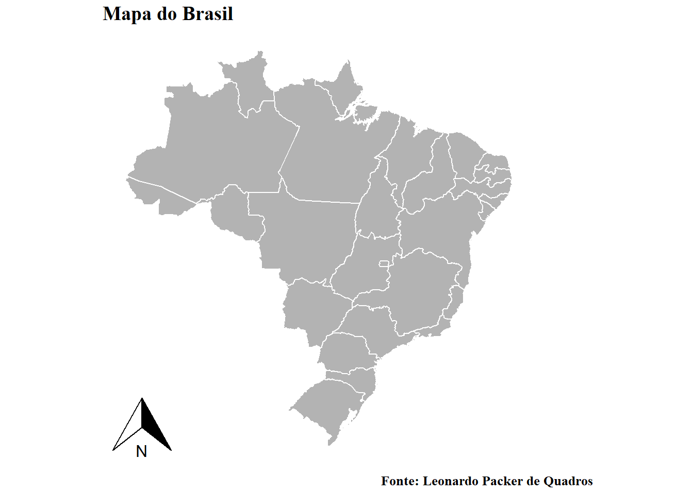
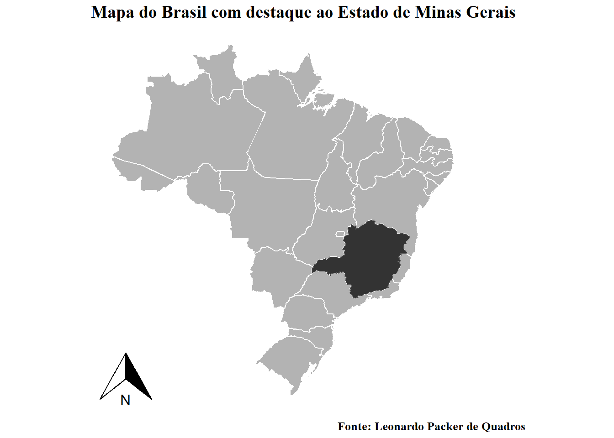
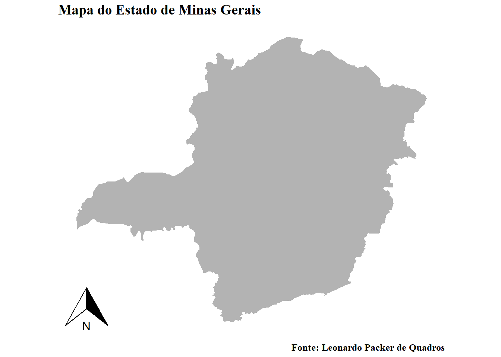
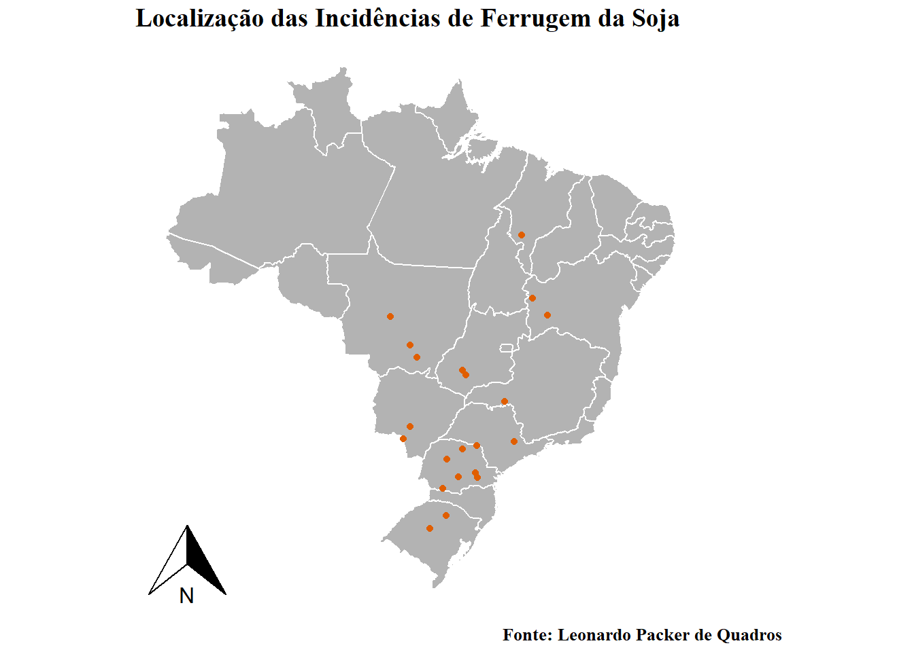
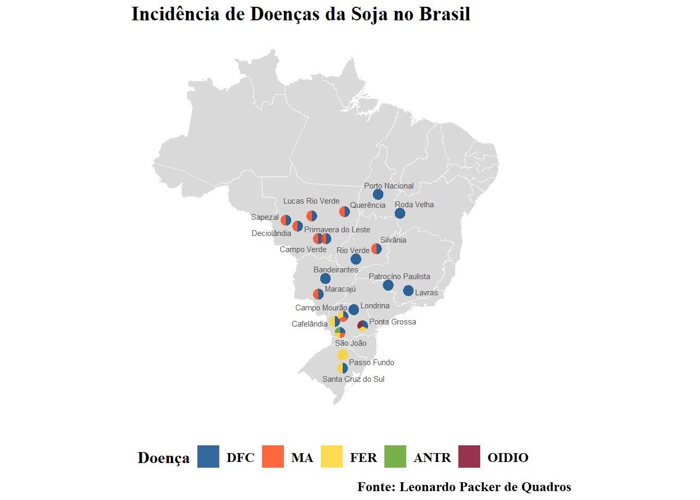

library(tidyverse)
library(ggplot2)
library(ggthemes)
library(rnaturalearth)
library(rnaturalearthhires) # necessário para instalar pacotes que se encontram apenas no github
library(r4pde)
library(ggspatial)
library(leaflet)
library(ggrepel)
library(scatterpie)
library(gsheet)
library(DT)Mapas
A apresentação de mapas, dependendo do estudo em fitopatologia, é um elemento gráfico essencial que compõe a localização geográfica de ensaios, objetos de estudo e isolados de um determinado patógeno. Além disso, permite determinar características ambientais favoráveis à incidência de uma doença e visualizar padrões espaciais e/ou temporais das mesmas. O Softwware R é uma ótima opção para realizar mapas interativos ou que carreguem alto nível de informação. Apresenderemos aqui como realizar mapas se utilizando dos pacotes rnaturalearth,rnaturalearthhires, ggspatial, scatterpie e ggrepel.
Carregamento dos pacotes
Mapas Estáticos
Mapa de um País
Utilização dos Pacotes rnaturalearth, rnaturalearthhires e ggspatial
## criação do objeto
world <- ne_countries()
BRA <- ne_states(country = "Brazil", returnclass = "sf")
## definindo o tema dos mapas
theme_set(theme_map() +
theme(text = element_text(family = "serif", face = "bold", size = 12)))
## plot do mapa
ggplot(BRA) +
geom_sf(fill = "grey70", color = "white", linewidth = 0.5) +
annotation_north_arrow(which_north = "grid") +
labs(x = "", y = "", title = "Mapa do Brasil", caption = "Fonte: Leonardo Packer de Quadros")
Mapa destacando um Estado
## criação do objeto
BRA <- ne_states(country = "Brazil",
returnclass = "sf")
MG <- BRA |>
filter(name_en == "Minas Gerais")
## plot do mapa
ggplot(BRA) +
geom_sf(fill = "grey70", color = "white", linewidth = 0.5) +
geom_sf(data = MG, fill = "grey20") +
annotation_north_arrow(which_north = "grid") +
labs(x = "", y = "", title = "Mapa do Brasil com destaque ao Estado de Minas Gerais", caption = "Fonte: Leonardo Packer de Quadros")
Mapa de um Estado
## criação do objeto
MG <- BRA |>
filter(name_en == "Minas Gerais")
## plotando o mapa
ggplot(MG) +
geom_sf(fill = "grey70", color = "white", linewidth = 0.5) +
annotation_north_arrow(which_north = "grid") +
labs(x = "", y = "", title = "Mapa do Estado de Minas Gerais", caption = "Fonte: Leonardo Packer de Quadros")
Mapa com pontos nas coordenadas de Incidência de Ferrugem da Soja no Brasil
## Utilização dos data frame do pacote r4pde
## criação do objeto
sbr<-RustSoybean
ggplot(BRA) +
geom_sf(fill = "grey70", color = "white", linewidth = 0.5)+
annotation_north_arrow(which_north = "grid") +
labs(x = "", y = "", title = "Localização das Incidências de Ferrugem da Soja", caption = "Fonte: Leonardo Packer de Quadros")+
geom_point(data = sbr, aes(longitude, latitude), color = "#e05e00")
Mapa com gráficos de pizza de incidência de doenças da soja nas localidades
Utilização dos pacotes ggrepel e scatterpie
## carregando o data frame
incidencia_doenças_soja <- gsheet2tbl("https://docs.google.com/spreadsheets/d/1pAIFKsdKxk_UQQXdYwIO-O5NOkYNhpclImJcLziYnk4/edit#gid=50258992")
head(incidencia_doenças_soja)# A tibble: 6 × 9
Local lat lon DFC MA FER ANTR OIDIO ensaios
<chr> <dbl> <dbl> <dbl> <dbl> <dbl> <dbl> <dbl> <dbl>
1 São João -25.8 -52.7 1 1 1 1 0 1
2 Ponta Grossa -25.1 -50.2 1 0 1 0 1 1
3 Londrina -23.3 -51.2 1 0 0 0 0 1
4 Campo Mourão -24.0 -52.4 1 1 1 0 0 1
5 Cafelândia -24.6 -53.3 1 0 1 0 0 1
6 Santa Cruz do Sul -29.7 -52.4 1 0 1 0 0 1## Plot do mapa
ggplot(BRA) +
geom_sf(fill = "gray70", alpha = 0.5, color = "white") +
coord_sf()+
geom_scatterpie(aes(x = lon, y = lat, r = 0.6), alpha = 0.8, color = NA, data = incidencia_doenças_soja,
cols = c("DFC",
"MA",
"FER",
"ANTR",
"OIDIO"))+
geom_text_repel(data = incidencia_doenças_soja, aes(lon, lat, label = Local),
size = 2, nudge_x = 0.2, nudge_y = 0.27, color = "gray30") +
scale_fill_calc()+
labs(x = "Longitude", y = "Latitude", legend = "", fill = "Doença", title = "Incidência de Doenças da Soja no Brasil", caption = "Fonte: Leonardo Packer de Quadros") +
theme(legend.position = "bottom", text = element_text(face = "bold", size = 12))
Mapas Interativos
Utilização do pacote leaflet, com utilização as coordenadas
Mapa do município de Viçosa - MG
leaflet() |>
addTiles() |>
setView(lng = -42.8825 , lat = -20.7546, zoom = 15)Mapa regional com o município de Viçosa - MG ao centro
leaflet() |>
addProviderTiles(providers$Esri.NatGeoWorldMap) |>
setView(lng = -42.8825 , lat = -20.7546, zoom = 5)Mapa com pontos nas coordenadas de Incidência de Ferrugem da Soja no Brasil
leaflet(sbr) |>
addTiles() |>
addCircleMarkers(radius = 2)